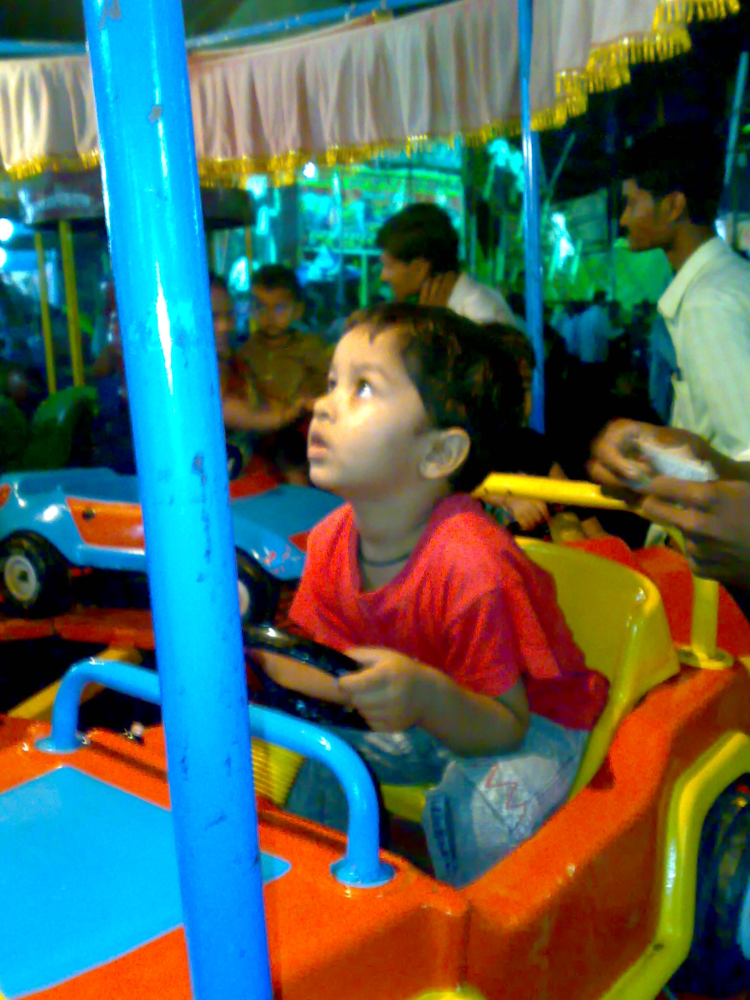

hello！
i am atharva  . I love hacking on hardware, incarnating software, building robots, generating shareholder value; and mostly importantly i enjoy experimenting.
i'm
20
 , researcher @
lossfunk
, researcher @
lossfunk
 exploiting world models; and living in
Mumbai
exploiting world models; and living in
Mumbai
 . I am also a self proclaimed professional cat photographer. i like
pirates and believe that, as humans; it is our moral duty to
reshape the world according to our preferences, and
technology enables this.
. I am also a self proclaimed professional cat photographer. i like
pirates and believe that, as humans; it is our moral duty to
reshape the world according to our preferences, and
technology enables this.
CURRENT QUESTS
- perception for robotics
- world models
- intelligent systems
CONTACT
if you want to talk, vibe or build something cool with me hit me up at k7agar@gmail.com